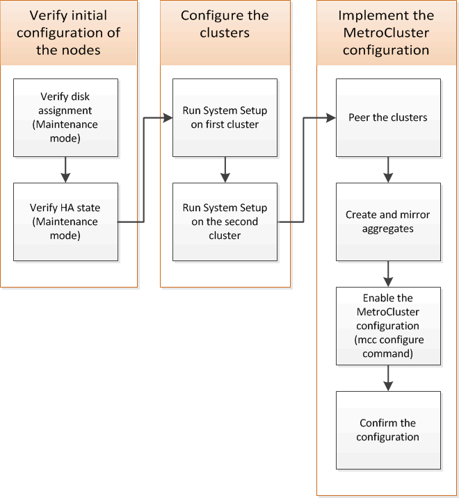

Solicitar cambios en el documento
Solicitar cambios en el documento Editar en GitHub
Editar en GitHub Guía del colaborador
Guía del colaboradorConfiguración del software MetroCluster en ONTAP
Colaboradores
Debe configurar cada nodo en la configuración de MetroCluster en ONTAP, incluidas las configuraciones a nivel de nodo y la configuración de los nodos en dos sitios. También debe implementar la relación de MetroCluster entre los dos sitios. Los pasos para sistemas con bandejas de discos nativas son ligeramente diferentes a los de sistemas con LUN de cabina.

Obteniendo información obligatoria
Debe recopilar las direcciones IP necesarias para los módulos de la controladora antes de comenzar el proceso de configuración.
Hoja de trabajo de información de red IP para el sitio A
Antes de configurar el sistema, debe obtener direcciones IP y otra información de red para el primer sitio MetroCluster (sitio A) del administrador de red.
Información del switch del centro a (clústeres con switches)
Cuando cablee el sistema, necesita un nombre de host y una dirección IP de gestión para cada switch del clúster. Esta información no es necesaria si utiliza un clúster sin switch de dos nodos o si tiene una configuración MetroCluster de dos nodos (un nodo en cada sitio).
Switch de clúster |
Nombre de host |
Dirección IP |
Máscara de red |
Pasarela predeterminada |
Interconexión 1 |
||||
Interconexión 2 |
||||
Gestión 1 |
||||
Gestión 2 |
Información de creación de clústeres de sitio a
Cuando cree el clúster por primera vez, necesita la siguiente información:
Tipo de información |
Sus valores |
Nombre del clúster Ejemplo utilizado en este procedimiento: Sitio_A |
|
Dominio DNS |
|
Servidores de nombres DNS |
|
Ubicación |
|
Contraseña de administrador |
Información del sitio a del nodo
Para cada nodo del clúster, necesita una dirección IP de gestión, una máscara de red y una pasarela predeterminada.
Nodo |
Puerto |
Dirección IP |
Máscara de red |
Pasarela predeterminada |
Nodo 1 Ejemplo utilizado en este procedimiento: Controller_A_1 |
||||
Nodo 2 No es necesario si se usa una configuración MetroCluster de dos nodos (un nodo en cada sitio). Ejemplo utilizado en este procedimiento: Controller_A_2 |
Realizar las LIF De sitio A y los puertos para el cluster peering
Para cada nodo del clúster necesita las direcciones IP de dos LIF de interconexión de clústeres, incluidas una máscara de red y una puerta de enlace predeterminada. Las LIF de interconexión de clústeres se usan para establecer la relación entre iguales de los clústeres.
Nodo |
Puerto |
Dirección IP de la LIF de interconexión de clústeres |
Máscara de red |
Pasarela predeterminada |
Nodo 1 IC LIF 1 |
||||
Nodo 1 IC LIF 2 |
||||
Nodo 2 IC LIF 1 No es necesario para configuraciones MetroCluster de dos nodos (un nodo en cada sitio). |
||||
Nodo 2 IC LIF 2Not requerido para configuraciones MetroCluster de dos nodos (un nodo en cada sitio). |
Información del servidor de tiempo del sitio
Debe sincronizar la hora, lo que requiere uno o varios servidores de hora NTP.
Nodo |
Nombre de host |
Dirección IP |
Máscara de red |
Pasarela predeterminada |
Servidor NTP 1 |
||||
Servidor NTP 2 |
Site a Información de AutoSupport
Tiene que configurar AutoSupport en cada nodo, lo que requiere la siguiente información:
Tipo de información |
Sus valores |
|
Dirección de correo electrónico del remitente |
Hosts de correo |
|
Nombres o direcciones IP |
Protocolo de transporte |
|
HTTP, HTTPS O SMTP |
Servidor proxy |
|
Direcciones de correo electrónico de destinatarios o listas de distribución |
Mensajes completos |
|
Mensajes concisos |
||
Centro a Información SP
Debe habilitar el acceso al Service Processor (SP) de cada nodo para la solución de problemas y el mantenimiento, que requiere la siguiente información de red para cada nodo:
Nodo |
Dirección IP |
Máscara de red |
Pasarela predeterminada |
Nodo 1 |
|||
Nodo 2 No es necesario para configuraciones MetroCluster de dos nodos (un nodo en cada sitio). |
Hoja de trabajo de información de la red IP para el sitio B
Antes de configurar el sistema, debe obtener direcciones IP y otra información de red para el segundo sitio MetroCluster (sitio B) del administrador de red.
Información del switch del centro B (clústeres con switches)
Cuando cablee el sistema, necesita un nombre de host y una dirección IP de gestión para cada switch del clúster. Esta información no es necesaria si utiliza un clúster sin switch de dos nodos o si tiene una configuración de MetroCluster de dos nodos (un nodo en cada sitio).
Switch de clúster |
Nombre de host |
Dirección IP |
Máscara de red |
Pasarela predeterminada |
Interconexión 1 |
||||
Interconexión 2 |
||||
Gestión 1 |
||||
Gestión 2 |
Información de creación de clústeres del sitio B.
Cuando cree el clúster por primera vez, necesita la siguiente información:
Tipo de información |
Sus valores |
Nombre del clúster Ejemplo utilizado: Site_B |
|
Dominio DNS |
|
Servidores de nombres DNS |
|
Ubicación |
|
Contraseña de administrador |
Información del nodo del sitio B
Para cada nodo del clúster, necesita una dirección IP de gestión, una máscara de red y una pasarela predeterminada.
Nodo |
Puerto |
Dirección IP |
Máscara de red |
Pasarela predeterminada |
Nodo 1 Ejemplo utilizado: Controller_B_1 |
||||
Nodo 2 No es necesario para configuraciones MetroCluster de dos nodos (un nodo en cada sitio). Ejemplo utilizado: Controller_B_2 |
Puertos y LIF del sitio B para paridad de clústeres
Para cada nodo del clúster necesita las direcciones IP de dos LIF de interconexión de clústeres, incluidas una máscara de red y una puerta de enlace predeterminada. Las LIF de interconexión de clústeres se usan para establecer la relación entre iguales de los clústeres.
Nodo |
Puerto |
Dirección IP de la LIF de interconexión de clústeres |
Máscara de red |
Pasarela predeterminada |
Nodo 1 IC LIF 1 |
||||
Nodo 1 IC LIF 2 |
||||
Nodo 2 IC LIF 1 No es necesario para configuraciones MetroCluster de dos nodos (un nodo en cada sitio). |
||||
Nodo 2 IC LIF 2 No es necesario para configuraciones MetroCluster de dos nodos (un nodo en cada sitio). |
Información del servidor horario del centro B.
Debe sincronizar la hora, lo que requiere uno o varios servidores de hora NTP.
Nodo |
Nombre de host |
Dirección IP |
Máscara de red |
Pasarela predeterminada |
Servidor NTP 1 |
||||
Servidor NTP 2 |
Centro B Información de AutoSupport
Tiene que configurar AutoSupport en cada nodo, lo que requiere la siguiente información:
Tipo de información |
Sus valores |
|
Dirección de correo electrónico del remitente |
Hosts de correo |
|
Nombres o direcciones IP |
Protocolo de transporte |
|
HTTP, HTTPS O SMTP |
Servidor proxy |
|
Direcciones de correo electrónico de destinatarios o listas de distribución |
Mensajes completos |
|
Mensajes concisos |
||
Centro B Información del SP
Debe habilitar el acceso al Service Processor (SP) de cada nodo para la solución de problemas y el mantenimiento, que requiere la siguiente información de red para cada nodo:
Nodo |
Dirección IP |
Máscara de red |
Pasarela predeterminada |
Nodo 1 (controladora_B_1) |
|||
Nodo 2 (controladora_B_2) No es necesario para configuraciones MetroCluster de dos nodos (un nodo en cada sitio). |
Similitudes y diferencias entre configuraciones estándar de clústeres y MetroCluster
La configuración de los nodos de cada clúster en una configuración de MetroCluster es similar a la de los nodos de un clúster estándar.
La configuración de MetroCluster se basa en dos clústeres estándar. Físicamente, la configuración debe ser simétrica, en la que cada nodo tenga la misma configuración de hardware y todos los componentes de MetroCluster deben cablearse y configurarse. Sin embargo, la configuración de software básica para los nodos de una configuración MetroCluster es la misma que para los nodos de un clúster estándar.
Paso de configuración |
Configuración de clúster estándar |
Configuración de MetroCluster |
Configure LIF de gestión, clúster y datos en cada nodo. |
Lo mismo en ambos tipos de clústeres |
Configure el agregado raíz. |
Lo mismo en ambos tipos de clústeres |
Configure los nodos en el clúster como parejas de alta disponibilidad |
Lo mismo en ambos tipos de clústeres |
Configure el clúster en un nodo del clúster. |
Lo mismo en ambos tipos de clústeres |
Una el otro nodo al clúster. |
Lo mismo en ambos tipos de clústeres |
Crear un agregado raíz reflejado. |
Opcional |
Obligatorio |
Conectar los clústeres en relación de paridad. |
Opcional |
Obligatorio |
Habilite la configuración de MetroCluster. |
No aplicable |
Restaurando los valores predeterminados del sistema y configurar el tipo de HBA en un módulo de controladora
Para garantizar que la instalación de MetroCluster se realice correctamente, restablezca y restaure los valores predeterminados en los módulos de la controladora.
Esta tarea solo es necesaria para configuraciones de ampliación mediante puentes FC a SAS.
-
En el aviso del CARGADOR, devuelva las variables de entorno a su configuración predeterminada:
set-defaults -
Inicie el nodo en modo de mantenimiento y, a continuación, configure los ajustes de cualquier HBA del sistema:
-
Arranque en modo de mantenimiento:
boot_ontap maint -
Compruebe la configuración actual de los puertos:
ucadmin show -
Actualice la configuración del puerto según sea necesario.
Si tiene este tipo de HBA y el modo que desea…
Se usa este comando…
CNA FC
ucadmin modify -m fc -t initiator adapter_nameEthernet de CNA
ucadmin modify -mode cna adapter_nameDestino FC
fcadmin config -t target adapter_nameIniciador FC
fcadmin config -t initiator adapter_name -
-
Salir del modo de mantenimiento:
haltDespués de ejecutar el comando, espere hasta que el nodo se detenga en el símbolo del sistema DEL CARGADOR.
-
Vuelva a arrancar el nodo en modo de mantenimiento para permitir que los cambios de configuración surtan efecto:
boot_ontap maint -
Compruebe los cambios realizados:
Si tiene este tipo de HBA…
Se usa este comando…
CNA
ucadmin showFC
fcadmin show -
Salir del modo de mantenimiento:
haltDespués de ejecutar el comando, espere hasta que el nodo se detenga en el símbolo del sistema DEL CARGADOR.
-
Arrancar el nodo en el menú de arranque:
boot_ontap menuDespués de ejecutar el comando, espere hasta que se muestre el menú de arranque.
-
Borre la configuración del nodo escribiendo "'wipeconfig'" en el símbolo del sistema del menú de inicio y, a continuación, pulse Intro.
La siguiente pantalla muestra el indicador del menú de inicio:
Please choose one of the following: (1) Normal Boot. (2) Boot without /etc/rc. (3) Change password. (4) Clean configuration and initialize all disks. (5) Maintenance mode boot. (6) Update flash from backup config. (7) Install new software first. (8) Reboot node. (9) Configure Advanced Drive Partitioning. Selection (1-9)? wipeconfig This option deletes critical system configuration, including cluster membership. Warning: do not run this option on a HA node that has been taken over. Are you sure you want to continue?: yes Rebooting to finish wipeconfig request.
Configurar puertos FC-VI en una tarjeta de puerto cuádruple X1132A-R6 en sistemas FAS8020
Si utiliza la tarjeta de cuatro puertos X1132A-R6 en un sistema FAS8020, puede introducir el modo de mantenimiento para configurar los puertos 1a y 1b para el uso de FC-VI y del iniciador. Esto no es necesario en los sistemas MetroCluster recibidos de fábrica, en los que los puertos están configurados correctamente para su configuración.
Esta tarea se debe realizar en modo de mantenimiento.

|
Solo se admite la conversión de un puerto FC-VI con el comando ucadmin en los sistemas FAS8020 y AFF 8020. La conversión de puertos FC a puertos FCVI no se admite en ninguna otra plataforma. |
-
Desactive los puertos:
storage disable adapter 1astorage disable adapter 1b*> storage disable adapter 1a Jun 03 02:17:57 [controller_B_1:fci.adapter.offlining:info]: Offlining Fibre Channel adapter 1a. Host adapter 1a disable succeeded Jun 03 02:17:57 [controller_B_1:fci.adapter.offline:info]: Fibre Channel adapter 1a is now offline. *> storage disable adapter 1b Jun 03 02:18:43 [controller_B_1:fci.adapter.offlining:info]: Offlining Fibre Channel adapter 1b. Host adapter 1b disable succeeded Jun 03 02:18:43 [controller_B_1:fci.adapter.offline:info]: Fibre Channel adapter 1b is now offline. *>
-
Compruebe que los puertos están deshabilitados:
ucadmin show*> ucadmin show Current Current Pending Pending Admin Adapter Mode Type Mode Type Status ------- ------- --------- ------- --------- ------- ... 1a fc initiator - - offline 1b fc initiator - - offline 1c fc initiator - - online 1d fc initiator - - online -
Establezca los puertos a y b en modo FC-VI:
ucadmin modify -adapter 1a -type fcviEl comando establece el modo en ambos puertos de la pareja de puertos, 1a y 1b (aunque sólo se haya especificado 1a en el comando).
*> ucadmin modify -t fcvi 1a Jun 03 02:19:13 [controller_B_1:ucm.type.changed:info]: FC-4 type has changed to fcvi on adapter 1a. Reboot the controller for the changes to take effect. Jun 03 02:19:13 [controller_B_1:ucm.type.changed:info]: FC-4 type has changed to fcvi on adapter 1b. Reboot the controller for the changes to take effect.
-
Confirme que el cambio está pendiente:
ucadmin show*> ucadmin show Current Current Pending Pending Admin Adapter Mode Type Mode Type Status ------- ------- --------- ------- --------- ------- ... 1a fc initiator - fcvi offline 1b fc initiator - fcvi offline 1c fc initiator - - online 1d fc initiator - - online -
Apague la controladora y luego reinicie en modo de mantenimiento.
-
Confirme el cambio de configuración:
ucadmin show localNode Adapter Mode Type Mode Type Status ------------ ------- ------- --------- ------- --------- ----------- ... controller_B_1 1a fc fcvi - - online controller_B_1 1b fc fcvi - - online controller_B_1 1c fc initiator - - online controller_B_1 1d fc initiator - - online 6 entries were displayed.
Verificación de la asignación de discos en modo de mantenimiento en una configuración de ocho o cuatro nodos
Antes de arrancar completamente el sistema en ONTAP, puede opcionalmente arrancar en modo de mantenimiento y comprobar la asignación de disco en los nodos. Se deben asignar los discos para crear una configuración activo-activo completamente simétrica, en la que cada pool tiene asignado el mismo número de discos.
Los nuevos sistemas MetroCluster tienen asignación de discos finalizada antes del envío.
En la siguiente tabla se muestran ejemplos de asignaciones de pools para una configuración de MetroCluster. Los discos se asignan a pools por bandeja.
Bandeja de discos (sample_shelf_name)… |
En el sitio… |
Pertenece a… |
Y se asigna a ese nodo… |
Bandeja de discos 1 (shelf_A_1_1) |
Centro a |
Nodo a 1 |
Piscina 0 |
Bandeja de discos 2 (shelf_A_1_3) |
Bandeja de discos 3 (shelf_B_1_1) |
Nodo B 1 |
Piscina 1 |
Bandeja de discos 4 (shelf_B_1_3) |
Bandeja de discos 5 (shelf_A_2_1) |
Nodo A 2 |
Piscina 0 |
Bandeja de discos 6 (shelf_A_2_3) |
Bandeja de discos 7 (shelf_B_2_1) |
Nodo B 2 |
Piscina 1 |
Bandeja de discos 8 (shelf_B_2_3) |
Bandeja de discos 1 (shelf_A_3_1) |
Nodo a 3 |
Piscina 0 |
Bandeja de discos 2 (shelf_A_3_3) |
Bandeja de discos 3 (shelf_B_3_1) |
Nodo B 3 |
Piscina 1 |
Bandeja de discos 4 (shelf_B_3_3) |
Bandeja de discos 5 (shelf_A_4_1) |
Nodo a 4 |
Piscina 0 |
Bandeja de discos 6 (shelf_A_4_3) |
Bandeja de discos 7 (shelf_B_4_1) |
Nodo B 4 |
Piscina 1 |
Bandeja de discos 8 (shelf_B_4_3) |
Bandeja de discos 9 (shelf_B_1_2) |
Centro B |
Nodo B 1 |
Piscina 0 |
Bandeja de discos 10 (shelf_B_1_4) |
Bandeja de discos 11 (shelf_A_1_2) |
Nodo a 1 |
Piscina 1 |
Bandeja de discos 12 (shelf_A_1_4) |
Bandeja de discos 13 (shelf_B_2_2) |
Nodo B 2 |
Piscina 0 |
Bandeja de discos 14 (shelf_B_2_4) |
Bandeja de discos 15 (shelf_A_2_2) |
Nodo A 2 |
Piscina 1 |
Bandeja de discos 16 (shelf_A_2_4) |
Bandeja de discos 1 (shelf_B_3_2) |
Nodo a 3 |
Piscina 0 |
Bandeja de discos 2 (shelf_B_3_4) |
Bandeja de discos 3 (shelf_A_3_2) |
Nodo B 3 |
Piscina 1 |
Bandeja de discos 4 (shelf_A_3_4) |
Bandeja de discos 5 (shelf_B_4_2) |
Nodo a 4 |
Piscina 0 |
Bandeja de discos 6 (shelf_B_4_4) |
Bandeja de discos 7 (shelf_A_4_2) |
Nodo B 4 |
-
Confirme las asignaciones de bandejas:
disk show –v -
Si es necesario, asigne de forma explícita los discos de las bandejas de discos conectadas al pool apropiado mediante el
disk assigncomando.El uso de comodines en el comando permite asignar todos los discos de una bandeja de discos con un comando. Es posible identificar los ID de la bandeja de discos y las bahías para cada disco con el
storage show disk --xcomando.
Asignación de la propiedad de disco en sistemas que no son AFF
Si los nodos MetroCluster no tienen los discos correctamente asignados, o si utiliza bandejas de discos DS460C en su configuración, debe asignar discos a cada uno de los nodos de la configuración de MetroCluster de bandeja a bandeja. Creará una configuración en la que cada nodo tenga el mismo número de discos en sus pools de discos locales y remotos.
Las controladoras de almacenamiento deben estar en modo de mantenimiento.
Si su configuración no incluye bandejas de discos DS460C, esta tarea no es necesaria si los discos se han asignado correctamente cuando se han recibido de fábrica.
|
|
El pool 0 siempre contiene los discos que se encuentran en el mismo lugar que el sistema de almacenamiento propietario. |
El pool 1 siempre contiene los discos remotos para el sistema de almacenamiento propietario de estos.
Si su configuración incluye bandejas de discos DS460C, debe asignar manualmente los discos con las siguientes directrices para cada cajón de 12 discos:
Asigne estos discos en el cajón… |
Para este nodo y pool… |
0 - 2 |
Pool del nodo local 0 |
3 - 5 |
Pool del nodo del partner de ALTA DISPONIBILIDAD 0 |
6 - 8 |
El partner de recuperación ante desastres del pool del nodo local 1 |
9 - 11 |
Partner de recuperación ante desastres del pool del partner de alta disponibilidad 1 |
Este patrón de asignación de discos garantiza que un agregado se vea mínimo afectado si un cajón se desconecta.
-
Si no lo ha hecho, arranque cada sistema en modo de mantenimiento.
-
Asigne las bandejas de discos a los nodos ubicados en el primer sitio (sitio A):
Las bandejas de discos en el mismo sitio que el nodo están asignadas al pool 0 y las bandejas de discos ubicadas en el sitio del partner se asignan al pool 1.
Debe asignar un mismo número de bandejas a cada pool.
-
En el primer nodo, asigne de forma sistemática las bandejas de discos locales al pool 0 y las bandejas de discos remotas al pool 1:
disk assign -shelf local-switch-name:shelf-name.port -p poolSi la controladora de almacenamiento Controller_A_1 tiene cuatro bandejas, emita los siguientes comandos:
*> disk assign -shelf FC_switch_A_1:1-4.shelf1 -p 0 *> disk assign -shelf FC_switch_A_1:1-4.shelf2 -p 0 *> disk assign -shelf FC_switch_B_1:1-4.shelf1 -p 1 *> disk assign -shelf FC_switch_B_1:1-4.shelf2 -p 1
-
Repita el proceso para el segundo nodo del sitio local, asignando sistemáticamente las bandejas de discos locales al pool 0 y las bandejas de discos remotos al pool 1:
disk assign -shelf local-switch-name:shelf-name.port -p poolSi la controladora de almacenamiento Controller_A_2 tiene cuatro bandejas, emita los siguientes comandos:
*> disk assign -shelf FC_switch_A_1:1-4.shelf3 -p 0 *> disk assign -shelf FC_switch_B_1:1-4.shelf4 -p 1 *> disk assign -shelf FC_switch_A_1:1-4.shelf3 -p 0 *> disk assign -shelf FC_switch_B_1:1-4.shelf4 -p 1
-
-
Asigne las bandejas de discos a los nodos ubicados en el segundo sitio (sitio B):
Las bandejas de discos en el mismo sitio que el nodo están asignadas al pool 0 y las bandejas de discos ubicadas en el sitio del partner se asignan al pool 1.
Debe asignar un mismo número de bandejas a cada pool.
-
En el primer nodo del centro remoto, asigne de forma sistemática sus bandejas de discos locales al pool 0 y sus bandejas de discos remotas al pool 1:
disk assign -shelf local-switch-nameshelf-name -p poolSi la controladora de almacenamiento Controller_B_1 tiene cuatro bandejas, emita los siguientes comandos:
*> disk assign -shelf FC_switch_B_1:1-5.shelf1 -p 0 *> disk assign -shelf FC_switch_B_1:1-5.shelf2 -p 0 *> disk assign -shelf FC_switch_A_1:1-5.shelf1 -p 1 *> disk assign -shelf FC_switch_A_1:1-5.shelf2 -p 1
-
Repita el proceso para el segundo nodo del sitio remoto, asignando sistemáticamente sus bandejas de discos locales al pool 0 y sus bandejas de discos remotas al pool 1:
disk assign -shelf shelf-name -p poolSi la controladora de almacenamiento Controller_B_2 tiene cuatro bandejas, emita los siguientes comandos:
*> disk assign -shelf FC_switch_B_1:1-5.shelf3 -p 0 *> disk assign -shelf FC_switch_B_1:1-5.shelf4 -p 0 *> disk assign -shelf FC_switch_A_1:1-5.shelf3 -p 1 *> disk assign -shelf FC_switch_A_1:1-5.shelf4 -p 1
-
-
Confirme las asignaciones de bandejas:
storage show shelf -
Salir del modo de mantenimiento:
halt -
Mostrar el menú de inicio:
boot_ontap menu -
En cada nodo, seleccione la opción 4 para inicializar todos los discos.
Asignación de propiedad de disco en sistemas AFF
Si utiliza sistemas AFF en una configuración con agregados reflejados y los nodos no tienen los discos (SSD) asignados correctamente, debe asignar la mitad de los discos de cada bandeja a un nodo local y la otra mitad de los discos a su nodo asociado de alta disponibilidad. Debe crear una configuración en la que cada nodo tenga el mismo número de discos en sus pools de discos locales y remotos.
Las controladoras de almacenamiento deben estar en modo de mantenimiento.
Esto no se aplica a configuraciones que tengan agregados no reflejados, una configuración activa/pasiva o que tengan un número desigual de discos en pools locales y remotos.
Esta tarea no es necesaria si los discos se asignaron correctamente cuando se recibieron de fábrica.
|
|
El pool 0 siempre contiene los discos que se encuentran en el mismo sitio que el sistema de almacenamiento propietario de ellos, mientras que el Pool 1 siempre contiene los discos remotos para el sistema de almacenamiento propietario de estos. |
-
Si no lo ha hecho, arranque cada sistema en modo de mantenimiento.
-
Asigne los discos a los nodos ubicados en el primer sitio (sitio A):
Debe asignar un número igual de discos a cada pool.
-
En el primer nodo, asigne sistemáticamente la mitad de los discos de cada bandeja al pool 0 y la otra mitad al pool del partner de alta disponibilidad 0:
disk assign -disk disk-name -p pool -n number-of-disksSi la controladora de almacenamiento Controller_A_1 tiene cuatro bandejas, cada una con 8 SSD, emita los siguientes comandos:
*> disk assign -shelf FC_switch_A_1:1-4.shelf1 -p 0 -n 4 *> disk assign -shelf FC_switch_A_1:1-4.shelf2 -p 0 -n 4 *> disk assign -shelf FC_switch_B_1:1-4.shelf1 -p 1 -n 4 *> disk assign -shelf FC_switch_B_1:1-4.shelf2 -p 1 -n 4
-
Repita el proceso para el segundo nodo del sitio local, asignando sistemáticamente la mitad de los discos de cada bandeja al pool 1 y la otra mitad al pool del partner de alta disponibilidad 1:
disk assign -disk disk-name -p poolSi la controladora de almacenamiento Controller_A_1 tiene cuatro bandejas, cada una con 8 SSD, emita los siguientes comandos:
*> disk assign -shelf FC_switch_A_1:1-4.shelf3 -p 0 -n 4 *> disk assign -shelf FC_switch_B_1:1-4.shelf4 -p 1 -n 4 *> disk assign -shelf FC_switch_A_1:1-4.shelf3 -p 0 -n 4 *> disk assign -shelf FC_switch_B_1:1-4.shelf4 -p 1 -n 4
-
-
Asigne los discos a los nodos ubicados en el segundo sitio (sitio B):
Debe asignar un número igual de discos a cada pool.
-
En el primer nodo del centro remoto, asigne sistemáticamente la mitad de los discos de cada bandeja al pool 0 y la otra mitad al pool 0 del partner de alta disponibilidad:
disk assign -disk disk-name -p poolSi la controladora de almacenamiento Controller_B_1 tiene cuatro bandejas, cada una con 8 SSD, emita los siguientes comandos:
*> disk assign -shelf FC_switch_B_1:1-5.shelf1 -p 0 -n 4 *> disk assign -shelf FC_switch_B_1:1-5.shelf2 -p 0 -n 4 *> disk assign -shelf FC_switch_A_1:1-5.shelf1 -p 1 -n 4 *> disk assign -shelf FC_switch_A_1:1-5.shelf2 -p 1 -n 4
-
Repita el proceso para el segundo nodo del sitio remoto, asignando sistemáticamente la mitad de los discos de cada bandeja al pool 1 y la otra mitad al pool del partner de alta disponibilidad 1:
disk assign -disk disk-name -p poolSi la controladora de almacenamiento Controller_B_2 tiene cuatro bandejas, cada una con 8 SSD, emita los siguientes comandos:
*> disk assign -shelf FC_switch_B_1:1-5.shelf3 -p 0 -n 4 *> disk assign -shelf FC_switch_B_1:1-5.shelf4 -p 0 -n 4 *> disk assign -shelf FC_switch_A_1:1-5.shelf3 -p 1 -n 4 *> disk assign -shelf FC_switch_A_1:1-5.shelf4 -p 1 -n 4
-
-
Confirme las asignaciones de discos:
storage show disk -
Salir del modo de mantenimiento:
halt -
Mostrar el menú de inicio:
boot_ontap menu -
En cada nodo, seleccione la opción 4 para inicializar todos los discos.
Verificación de la asignación de discos en modo de mantenimiento en una configuración de dos nodos
Antes de arrancar completamente el sistema en ONTAP, tiene la opción de arrancar el sistema en modo de mantenimiento y comprobar la asignación de disco en los nodos. Los discos deben asignarse para crear una configuración simétrica en la que ambos sitios poseen sus propias bandejas de disco y proporcionan datos, en la que cada nodo y cada pool tienen asignado un mismo número de discos reflejados.
El sistema debe estar en modo de mantenimiento.
Los nuevos sistemas MetroCluster tienen asignación de discos finalizada antes del envío.
En la siguiente tabla se muestran ejemplos de asignaciones de pools para una configuración de MetroCluster. Los discos se asignan a pools por bandeja.
Bandeja de discos (nombre de ejemplo)… |
En el sitio… |
Pertenece a… |
Y se asigna a ese nodo… |
Bandeja de discos 1 (shelf_A_1_1) |
Centro a |
Nodo a 1 |
Piscina 0 |
Bandeja de discos 2 (shelf_A_1_3) |
Bandeja de discos 3 (shelf_B_1_1) |
Nodo B 1 |
Piscina 1 |
Bandeja de discos 4 (shelf_B_1_3) |
Bandeja de discos 9 (shelf_B_1_2) |
Centro B |
Nodo B 1 |
Piscina 0 |
Bandeja de discos 10 (shelf_B_1_4) |
Bandeja de discos 11 (shelf_A_1_2) |
Nodo a 1 |
Si su configuración incluye bandejas de discos DS460C, debe asignar manualmente los discos con las siguientes directrices para cada cajón de 12 discos:
Asigne estos discos en el cajón… |
Para este nodo y pool… |
1 - 6 |
Pool del nodo local 0 |
7 - 12 |
Pool del partner de recuperación ante desastres 1 |
Este patrón de asignación de discos minimiza el efecto en un agregado si un cajón se desconecta.
-
Si el sistema ha sido recibido de fábrica, confirme las asignaciones de bandejas:
disk show –v -
Si es necesario, se pueden asignar explícitamente discos de las bandejas de discos conectadas al pool correspondiente mediante el comando Disk assign.
Las bandejas de discos en el mismo sitio que el nodo están asignadas al pool 0 y las bandejas de discos ubicadas en el sitio del partner se asignan al pool 1. Debe asignar un mismo número de bandejas a cada pool.
-
Si no lo ha hecho, arranque cada sistema en modo de mantenimiento.
-
En el nodo del sitio A, asigne de forma sistemática las bandejas de discos locales al pool 0 y las bandejas de discos remotas al pool 1:
disk assign -shelf disk_shelf_name -p poolSi la controladora de almacenamiento node_A_1 tiene cuatro bandejas, emita los siguientes comandos:
*> disk assign -shelf shelf_A_1_1 -p 0 *> disk assign -shelf shelf_A_1_3 -p 0 *> disk assign -shelf shelf_A_1_2 -p 1 *> disk assign -shelf shelf_A_1_4 -p 1
-
En el nodo del sitio remoto (sitio B), asigne de forma sistemática sus bandejas de discos locales al pool 0 y sus bandejas de discos remotas al pool 1:
disk assign -shelf disk_shelf_name -p poolSi la controladora de almacenamiento node_B_1 tiene cuatro bandejas, emita los siguientes comandos:
*> disk assign -shelf shelf_B_1_2 -p 0 *> disk assign -shelf shelf_B_1_4 -p 0 *> disk assign -shelf shelf_B_1_1 -p 1 *> disk assign -shelf shelf_B_1_3 -p 1
-
Muestre los ID de bandeja de discos y las bahías para cada disco:
disk show –v
-
Verificación y configuración del estado de alta disponibilidad de los componentes en modo de mantenimiento
Al configurar un sistema de almacenamiento en una configuración MetroCluster, debe asegurarse de que el estado de alta disponibilidad del módulo de controladora y los componentes de chasis es mcc o mcc-2n, de modo que estos componentes se inicien correctamente.
El sistema debe estar en modo de mantenimiento.
Esta tarea no es necesaria en los sistemas que se reciben de fábrica.
-
En el modo de mantenimiento, muestre el estado de alta disponibilidad del módulo de controladora y el chasis:
ha-config showEl estado de alta disponibilidad correcto depende de la configuración de la MetroCluster.
Número de controladoras en la configuración de MetroCluster
El estado DE ALTA DISPONIBILIDAD de todos los componentes debería ser…
Configuración FC MetroCluster de ocho o cuatro nodos
mcc
Configuración MetroCluster FC de dos nodos
mcc-2n
Configuración de IP de MetroCluster
mccip
-
Si el estado del sistema mostrado del controlador no es correcto, configure el estado de alta disponibilidad para el módulo del controlador:
Número de controladoras en la configuración de MetroCluster
Comando
Configuración FC MetroCluster de ocho o cuatro nodos
ha-config modificar controlador mcc
Configuración MetroCluster FC de dos nodos
ha-config modificar controladora mcc-2n
Configuración de IP de MetroCluster
ha-config modify controller mccip
-
Si el estado del sistema mostrado del chasis no es correcto, establezca el estado de alta disponibilidad para el chasis:
Número de controladoras en la configuración de MetroCluster
Comando
Configuración FC MetroCluster de ocho o cuatro nodos
ha-config modificar mcc chasis
Configuración MetroCluster FC de dos nodos
ha-config modificar chasis mcc-2n
Configuración de IP de MetroCluster
ha-config modificar el mccip del chasis
-
Arrancar el nodo en ONTAP:
boot_ontap -
Repita estos pasos en cada nodo de la configuración de MetroCluster.
Configurar ONTAP
Debe configurar ONTAP en cada módulo de controladora.
Si debe reiniciar el sistema de las nuevas controladoras, consulte "Netarrancando los nuevos módulos del controlador" En la MetroCluster Guía de actualización, transición y ampliación.
Configurar ONTAP en una configuración MetroCluster de dos nodos
En una configuración MetroCluster de dos nodos, en cada clúster debe arrancar el nodo, salir del asistente de configuración de clúster y utilizar el comando cluster setup para configurar el nodo en un clúster de un solo nodo.
No debe haber configurado Service Processor.
Esta tarea se realiza para configuraciones MetroCluster de dos nodos que utilizan almacenamiento de NetApp nativo.
Los nuevos sistemas MetroCluster están preconfigurados, no es necesario realizar estos pasos. Sin embargo, debe configurar AutoSupport.
Esta tarea debe realizarse en ambos clústeres de la configuración de MetroCluster.
Para obtener más información general sobre la configuración de ONTAP, consulte la Guía de configuración de software
-
Encienda el primer nodo.
Debe repetir este paso en el nodo en el sitio de recuperación ante desastres (DR). El nodo arranca y, a continuación, se inicia el Asistente de configuración de clúster en la consola, para informarle de que AutoSupport se habilitará automáticamente.
::> Welcome to the cluster setup wizard. You can enter the following commands at any time: "help" or "?" - if you want to have a question clarified, "back" - if you want to change previously answered questions, and "exit" or "quit" - if you want to quit the cluster setup wizard. Any changes you made before quitting will be saved. You can return to cluster setup at any time by typing "cluster setup". To accept a default or omit a question, do not enter a value. This system will send event messages and periodic reports to NetApp Technical Support. To disable this feature, enter autosupport modify -support disable within 24 hours. Enabling AutoSupport can significantly speed problem determination and resolution, should a problem occur on your system. For further information on AutoSupport, see: http://support.netapp.com/autosupport/ Type yes to confirm and continue {yes}: yes Enter the node management interface port [e0M]: Enter the node management interface IP address [10.101.01.01]: Enter the node management interface netmask [101.010.101.0]: Enter the node management interface default gateway [10.101.01.0]: Do you want to create a new cluster or join an existing cluster? {create, join}: -
Cree un nuevo clúster:
create -
Elija si el nodo se va a usar como un clúster de nodo único.
Do you intend for this node to be used as a single node cluster? {yes, no} [yes]: -
Acepte los valores predeterminados del sistema
yesPulsando Intro, o introduzca sus propios valores escribiendo `no`Y, a continuación, pulse Intro. -
Siga las indicaciones para completar el asistente de configuración del clúster, presione Entrar para aceptar los valores predeterminados o escribir sus propios valores y luego presione Entrar.
Los valores predeterminados se determinan automáticamente en función de la plataforma y la configuración de la red.
-
Una vez que haya completado el asistente de configuración del clúster y salga, compruebe que el clúster esté activo y que el primer nodo esté en buen estado:
cluster showEl siguiente ejemplo muestra un clúster en el que el primer nodo (cluster1-01) está en buen estado y puede participar:
cluster1::> cluster show Node Health Eligibility --------------------- ------- ------------ cluster1-01 true true
Si necesita cambiar cualquiera de los ajustes introducidos para la SVM de administrador o la SVM de nodo, puede acceder al asistente de configuración de clúster mediante el comando cluster setup.
Configurar ONTAP en una configuración MetroCluster de ocho o cuatro nodos
Tras arrancar cada nodo, se le pedirá que ejecute la herramienta de configuración del sistema para realizar una configuración básica del nodo y del clúster. Después de configurar el clúster, volverá a la CLI de ONTAP para crear agregados y crear la configuración de MetroCluster.
Debe haber cableado la configuración de MetroCluster.
Esta tarea se realiza para configuraciones MetroCluster de ocho o cuatro nodos utilizando almacenamiento nativo de NetApp.
Los nuevos sistemas MetroCluster están preconfigurados, no es necesario realizar estos pasos. No obstante, debe configurar la herramienta AutoSupport.
Esta tarea debe realizarse en ambos clústeres de la configuración de MetroCluster.
Este procedimiento utiliza la herramienta Configuración del sistema. Si lo desea, puede usar el asistente de configuración de clúster de la CLI en su lugar.
-
Si aún no lo ha hecho, encienda cada nodo y deje que arranque por completo.
Si el sistema se encuentra en modo de mantenimiento, emita el comando halt para salir del modo de mantenimiento y, a continuación, emita el siguiente comando desde el símbolo del SISTEMA DEL CARGADOR:
boot_ontapLa salida debe ser similar a la siguiente:
Welcome to node setup You can enter the following commands at any time: "help" or "?" - if you want to have a question clarified, "back" - if you want to change previously answered questions, and "exit" or "quit" - if you want to quit the setup wizard. Any changes you made before quitting will be saved. To accept a default or omit a question, do not enter a value. . . .
-
Active la herramienta AutoSupport siguiendo las instrucciones del sistema.
-
Responda a las solicitudes para configurar la interfaz de gestión de nodos.
Los mensajes son similares a los siguientes:
Enter the node management interface port: [e0M]: Enter the node management interface IP address: 10.228.160.229 Enter the node management interface netmask: 225.225.252.0 Enter the node management interface default gateway: 10.228.160.1
-
Confirme que los nodos están configurados en el modo de alta disponibilidad:
storage failover show -fields modeSi no es así, debe emitir el siguiente comando en cada nodo y reiniciar el nodo:
storage failover modify -mode ha -node localhostEste comando configura el modo de alta disponibilidad, pero no permite la conmutación por error del almacenamiento. La conmutación por error del almacenamiento se habilita automáticamente cuando se realiza la configuración de MetroCluster más adelante en el proceso de configuración.
-
Confirme que tiene cuatro puertos configurados como interconexiones del clúster:
network port showEn el ejemplo siguiente se muestra el resultado de cluster_A:
cluster_A::> network port show Speed (Mbps) Node Port IPspace Broadcast Domain Link MTU Admin/Oper ------ --------- ------------ ---------------- ----- ------- ------------ node_A_1 **e0a Cluster Cluster up 1500 auto/1000 e0b Cluster Cluster up 1500 auto/1000** e0c Default Default up 1500 auto/1000 e0d Default Default up 1500 auto/1000 e0e Default Default up 1500 auto/1000 e0f Default Default up 1500 auto/1000 e0g Default Default up 1500 auto/1000 node_A_2 **e0a Cluster Cluster up 1500 auto/1000 e0b Cluster Cluster up 1500 auto/1000** e0c Default Default up 1500 auto/1000 e0d Default Default up 1500 auto/1000 e0e Default Default up 1500 auto/1000 e0f Default Default up 1500 auto/1000 e0g Default Default up 1500 auto/1000 14 entries were displayed. -
Si va a crear un clúster sin switches de dos nodos (un clúster sin switches de interconexión de clúster), habilite el modo de red de clúster sin switches:
-
Cambie al nivel de privilegio avanzado:
set -privilege advanced
Usted puede responder
ycuando se le solicite que continúe en el modo avanzado. Aparece el símbolo del sistema del modo avanzado (*>).-
Habilitar modo de clúster sin switch:
network options switchless-cluster modify -enabled true -
Vuelva al nivel de privilegio de administrador:
set -privilege admin
-
-
Inicie la herramienta de configuración del sistema tal como se indica mediante la información que aparece en la consola del sistema después del arranque inicial.
-
Utilice la herramienta System Setup para configurar cada nodo y crear el clúster, pero no cree agregados.
Puede crear agregados reflejados en tareas posteriores.
Vuelva a la interfaz de línea de comandos de ONTAP y complete la configuración de MetroCluster realizando las tareas siguientes.
Configurar los clústeres en una configuración MetroCluster
Debe configurar la paridad de los clústeres, reflejar los agregados raíz, crear un agregado de datos reflejados y, a continuación, emitir el comando para implementar las operaciones de MetroCluster.
Una relación entre iguales de los clústeres
Los clústeres de la configuración de MetroCluster deben tener una relación entre iguales para que puedan comunicarse entre sí y realizar las operaciones de mirroring de datos esenciales para la recuperación ante desastres de MetroCluster.
"Configuración exprés de relación entre iguales de clústeres y SVM"
Configurar las LIF de interconexión de clústeres
Debe crear LIF de interconexión de clústeres en puertos utilizados para la comunicación entre los clústeres de partners de MetroCluster. Puede utilizar puertos o puertos dedicados que también tengan tráfico de datos.
Configurar las LIF de interconexión de clústeres en puertos dedicados
Puede configurar LIF de interconexión de clústeres en puertos dedicados. Al hacerlo, normalmente aumenta el ancho de banda disponible para el tráfico de replicación.
-
Enumere los puertos del clúster:
network port showPara obtener una sintaxis de comando completa, consulte la página man.
En el siguiente ejemplo, se muestran los puertos de red en cluster01:
cluster01::> network port show Speed (Mbps) Node Port IPspace Broadcast Domain Link MTU Admin/Oper ------ --------- ------------ ---------------- ----- ------- ------------ cluster01-01 e0a Cluster Cluster up 1500 auto/1000 e0b Cluster Cluster up 1500 auto/1000 e0c Default Default up 1500 auto/1000 e0d Default Default up 1500 auto/1000 e0e Default Default up 1500 auto/1000 e0f Default Default up 1500 auto/1000 cluster01-02 e0a Cluster Cluster up 1500 auto/1000 e0b Cluster Cluster up 1500 auto/1000 e0c Default Default up 1500 auto/1000 e0d Default Default up 1500 auto/1000 e0e Default Default up 1500 auto/1000 e0f Default Default up 1500 auto/1000 -
Determine qué puertos están disponibles para dedicar a la comunicación entre clústeres:
network interface show -fields home-port,curr-portPara obtener una sintaxis de comando completa, consulte la página man.
En el siguiente ejemplo se muestra que no se han asignado LIF a los puertos «'e0e'» ni «'e0f»:
cluster01::> network interface show -fields home-port,curr-port vserver lif home-port curr-port ------- -------------------- --------- --------- Cluster cluster01-01_clus1 e0a e0a Cluster cluster01-01_clus2 e0b e0b Cluster cluster01-02_clus1 e0a e0a Cluster cluster01-02_clus2 e0b e0b cluster01 cluster_mgmt e0c e0c cluster01 cluster01-01_mgmt1 e0c e0c cluster01 cluster01-02_mgmt1 e0c e0c -
Cree un grupo de recuperación tras fallos para los puertos dedicados:
network interface failover-groups create -vserver system_SVM -failover-group failover_group -targets physical_or_logical_portsEn el siguiente ejemplo se asignan los puertos "'e0e'" y "'e0f'" al grupo de recuperación tras fallos intercluster01 del sistema SVMcluster01:
cluster01::> network interface failover-groups create -vserver cluster01 -failover-group intercluster01 -targets cluster01-01:e0e,cluster01-01:e0f,cluster01-02:e0e,cluster01-02:e0f
-
Compruebe que el grupo de recuperación tras fallos se ha creado:
network interface failover-groups showPara obtener una sintaxis de comando completa, consulte la página man.
cluster01::> network interface failover-groups show Failover Vserver Group Targets ---------------- ---------------- -------------------------------------------- Cluster Cluster cluster01-01:e0a, cluster01-01:e0b, cluster01-02:e0a, cluster01-02:e0b cluster01 Default cluster01-01:e0c, cluster01-01:e0d, cluster01-02:e0c, cluster01-02:e0d, cluster01-01:e0e, cluster01-01:e0f cluster01-02:e0e, cluster01-02:e0f intercluster01 cluster01-01:e0e, cluster01-01:e0f cluster01-02:e0e, cluster01-02:e0f -
Cree LIF de interconexión de clústeres en la SVM del sistema y asígnelas al grupo de recuperación tras fallos.
Versión de ONTAP
Comando
9.6 y posterior
network interface create -vserver system_SVM -lif LIF_name -service-policy default-intercluster -home-node node -home-port port -address port_IP -netmask netmask -failover-group failover_group9.5 y anteriores
network interface create -vserver system_SVM -lif LIF_name -role intercluster -home-node node -home-port port -address port_IP -netmask netmask -failover-group failover_groupPara obtener una sintaxis de comando completa, consulte la página man.
En el siguiente ejemplo se crean las LIF de interconexión de clústeres "'cluster01_icl01'" y "'cluster01_icl02'" en el grupo de recuperación tras fallos intercluster01:
cluster01::> network interface create -vserver cluster01 -lif cluster01_icl01 -service- policy default-intercluster -home-node cluster01-01 -home-port e0e -address 192.168.1.201 -netmask 255.255.255.0 -failover-group intercluster01 cluster01::> network interface create -vserver cluster01 -lif cluster01_icl02 -service- policy default-intercluster -home-node cluster01-02 -home-port e0e -address 192.168.1.202 -netmask 255.255.255.0 -failover-group intercluster01
-
Compruebe que se han creado las LIF de interconexión de clústeres:
En ONTAP 9.6 y posterior:
network interface show -service-policy default-interclusterEn ONTAP 9.5 y anteriores:
network interface show -role interclusterPara obtener una sintaxis de comando completa, consulte la página man.
cluster01::> network interface show -service-policy default-intercluster Logical Status Network Current Current Is Vserver Interface Admin/Oper Address/Mask Node Port Home ----------- ---------- ---------- ------------------ ------------- ------- ---- cluster01 cluster01_icl01 up/up 192.168.1.201/24 cluster01-01 e0e true cluster01_icl02 up/up 192.168.1.202/24 cluster01-02 e0f true -
Compruebe que las LIF de interconexión de clústeres son redundantes:
En ONTAP 9.6 y posterior:
network interface show -service-policy default-intercluster -failoverEn ONTAP 9.5 y anteriores:
network interface show -role intercluster -failover
Para obtener una sintaxis de comando completa, consulte la página man.
+ el siguiente ejemplo muestra que las LIF de interconexión de clústeres «'cluster01_icl01'» y «'cluster01_icl02'» del puerto «'e0e'» de SVM se conmutarán por error al puerto «'e0f'».
+
cluster01::> network interface show -service-policy default-intercluster –failover
Logical Home Failover Failover
Vserver Interface Node:Port Policy Group
-------- --------------- --------------------- --------------- --------
cluster01
cluster01_icl01 cluster01-01:e0e local-only intercluster01
Failover Targets: cluster01-01:e0e,
cluster01-01:e0f
cluster01_icl02 cluster01-02:e0e local-only intercluster01
Failover Targets: cluster01-02:e0e,
cluster01-02:e0f
"Consideraciones que tener en cuenta al utilizar puertos dedicados"
Configurar las LIF de interconexión de clústeres en puertos de datos compartidos
Las LIF de interconexión de clústeres se pueden configurar en los puertos compartidos con la red de datos. De este modo, se reduce el número de puertos necesarios para interconectar redes.
-
Enumere los puertos del clúster:
network port showPara obtener una sintaxis de comando completa, consulte la página man.
En el siguiente ejemplo, se muestran los puertos de red en cluster01:
cluster01::> network port show Speed (Mbps) Node Port IPspace Broadcast Domain Link MTU Admin/Oper ------ --------- ------------ ---------------- ----- ------- ------------ cluster01-01 e0a Cluster Cluster up 1500 auto/1000 e0b Cluster Cluster up 1500 auto/1000 e0c Default Default up 1500 auto/1000 e0d Default Default up 1500 auto/1000 cluster01-02 e0a Cluster Cluster up 1500 auto/1000 e0b Cluster Cluster up 1500 auto/1000 e0c Default Default up 1500 auto/1000 e0d Default Default up 1500 auto/1000 -
Crear LIF de interconexión de clústeres en la SVM del sistema:
En ONTAP 9.6 y posterior:
network interface create -vserver system_SVM -lif LIF_name -service-policy default-intercluster -home-node node -home-port port -address port_IP -netmask netmaskEn ONTAP 9.5 y anteriores:
network interface create -vserver system_SVM -lif LIF_name -role intercluster -home-node node -home-port port -address port_IP -netmask netmaskPara obtener una sintaxis de comando completa, consulte la página man.
En el siguiente ejemplo se crean las LIF de interconexión de clústeres "'cluster01_icl01'" y "'cluster01_icl02'":
cluster01::> network interface create -vserver cluster01 -lif cluster01_icl01 -service- policy default-intercluster -home-node cluster01-01 -home-port e0c -address 192.168.1.201 -netmask 255.255.255.0 cluster01::> network interface create -vserver cluster01 -lif cluster01_icl02 -service- policy default-intercluster -home-node cluster01-02 -home-port e0c -address 192.168.1.202 -netmask 255.255.255.0
-
Compruebe que se han creado las LIF de interconexión de clústeres:
En ONTAP 9.6 y posterior:
network interface show -service-policy default-interclusterEn ONTAP 9.5 y anteriores:
network interface show -role interclusterPara obtener una sintaxis de comando completa, consulte la página man.
cluster01::> network interface show -service-policy default-intercluster Logical Status Network Current Current Is Vserver Interface Admin/Oper Address/Mask Node Port Home ----------- ---------- ---------- ------------------ ------------- ------- ---- cluster01 cluster01_icl01 up/up 192.168.1.201/24 cluster01-01 e0c true cluster01_icl02 up/up 192.168.1.202/24 cluster01-02 e0c true -
Compruebe que las LIF de interconexión de clústeres son redundantes:
En ONTAP 9.6 y posterior:
network interface show –service-policy default-intercluster -failoverEn ONTAP 9.5 y anteriores:
network interface show -role intercluster -failoverPara obtener una sintaxis de comando completa, consulte la página man.
En el siguiente ejemplo se muestra que las LIF de interconexión de clústeres «'cluster01_icl01'» y «'cluster01_icl02» del puerto «'e0c'» se conmutarán por error al puerto «'e0d'».
cluster01::> network interface show -service-policy default-intercluster –failover Logical Home Failover Failover Vserver Interface Node:Port Policy Group -------- --------------- --------------------- --------------- -------- cluster01 cluster01_icl01 cluster01-01:e0c local-only 192.168.1.201/24 Failover Targets: cluster01-01:e0c, cluster01-01:e0d cluster01_icl02 cluster01-02:e0c local-only 192.168.1.201/24 Failover Targets: cluster01-02:e0c, cluster01-02:e0d
"Consideraciones que tener en cuenta al compartir puertos de datos"
Creación de una relación de paridad entre clústeres
Debe crear la relación de paridad entre los clústeres de MetroCluster.
Creación de una relación de paridad entre clústeres
Puede usar el comando cluster peer create para crear una relación entre iguales entre un clúster local y remoto. Después de crear la relación entre iguales, puede ejecutar la creación entre iguales de clústeres en el clúster remoto para autenticarla en el clúster local.
-
Debe haber creado LIF de interconexión de clústeres en todos los nodos de los clústeres que se están interponiendo.
-
Los clústeres deben ejecutar ONTAP 9.3 o una versión posterior.
-
En el clúster de destino, cree una relación entre iguales con el clúster de origen:
cluster peer create -generate-passphrase -offer-expiration MM/DD/YYYY HH:MM:SS|1…7days|1…168hours -peer-addrs peer_LIF_IPs -ipspace ipspaceSi especifica ambas
-generate-passphrasey..-peer-addrs, Sólo el clúster cuyas LIF de interconexión de clústeres se especifican en-peer-addrspuede utilizar la contraseña generada.Puede ignorar la
-ipspaceSi no está utilizando un espacio IP personalizado. Para obtener una sintaxis de comando completa, consulte la página man.En el siguiente ejemplo se crea una relación de paridad de clústeres en un clúster remoto no especificado:
cluster02::> cluster peer create -generate-passphrase -offer-expiration 2days Passphrase: UCa+6lRVICXeL/gq1WrK7ShR Expiration Time: 6/7/2017 08:16:10 EST Initial Allowed Vserver Peers: - Intercluster LIF IP: 192.140.112.101 Peer Cluster Name: Clus_7ShR (temporary generated) Warning: make a note of the passphrase - it cannot be displayed again. -
En el clúster de origen, autentique el clúster de origen al clúster de destino:
cluster peer create -peer-addrs peer_LIF_IPs -ipspace ipspacePara obtener una sintaxis de comando completa, consulte la página man.
En el siguiente ejemplo se autentica el clúster local en el clúster remoto en las direcciones IP de LIF entre clústeres 192.140.112.101 y 192.140.112.102:
cluster01::> cluster peer create -peer-addrs 192.140.112.101,192.140.112.102 Notice: Use a generated passphrase or choose a passphrase of 8 or more characters. To ensure the authenticity of the peering relationship, use a phrase or sequence of characters that would be hard to guess. Enter the passphrase: Confirm the passphrase: Clusters cluster02 and cluster01 are peered.Introduzca la frase de acceso para la relación entre iguales cuando se le solicite.
-
Compruebe que se ha creado la relación de paridad entre clústeres:
cluster peer show -instancecluster01::> cluster peer show -instance Peer Cluster Name: cluster02 Remote Intercluster Addresses: 192.140.112.101, 192.140.112.102 Availability of the Remote Cluster: Available Remote Cluster Name: cluster2 Active IP Addresses: 192.140.112.101, 192.140.112.102 Cluster Serial Number: 1-80-123456 Address Family of Relationship: ipv4 Authentication Status Administrative: no-authentication Authentication Status Operational: absent Last Update Time: 02/05 21:05:41 IPspace for the Relationship: Default -
Compruebe la conectividad y el estado de los nodos en la relación de paridad:
cluster peer health showcluster01::> cluster peer health show Node cluster-Name Node-Name Ping-Status RDB-Health Cluster-Health Avail… ---------- --------------------------- --------- --------------- -------- cluster01-01 cluster02 cluster02-01 Data: interface_reachable ICMP: interface_reachable true true true cluster02-02 Data: interface_reachable ICMP: interface_reachable true true true cluster01-02 cluster02 cluster02-01 Data: interface_reachable ICMP: interface_reachable true true true cluster02-02 Data: interface_reachable ICMP: interface_reachable true true true
Creación de una relación de paridad entre clústeres (ONTAP 9.2 y versiones anteriores)
Puede utilizar el comando cluster peer create para iniciar una solicitud de una relación de paridad entre un clúster local y remoto. Después de que el clúster local haya solicitado la relación de paridad, puede ejecutar la creación de pares de clústeres en el clúster remoto para aceptar la relación.
-
Debe haber creado LIF de interconexión de clústeres en cada nodo en los clústeres que se están interponiendo.
-
Los administradores del clúster deben haber acordado la clave de acceso que usará cada clúster para autenticarse con el otro.
-
En el clúster de destino de la protección de datos, cree una relación entre iguales con el clúster de origen de protección de datos:
cluster peer create -peer-addrs peer_LIF_IPs -ipspace ipspacePuede ignorar la
-ipspaceSi no está utilizando un espacio IP personalizado. Para obtener una sintaxis de comando completa, consulte la página man.En el siguiente ejemplo se crea una relación de paridad de clúster con el clúster remoto en las direcciones IP de LIF entre clústeres 192.168.2.201 y 192.168.2.202:
cluster02::> cluster peer create -peer-addrs 192.168.2.201,192.168.2.202 Enter the passphrase: Please enter the passphrase again:
Introduzca la frase de acceso para la relación entre iguales cuando se le solicite.
-
En el clúster de origen de protección de datos, autentique el clúster de origen en el clúster de destino:
cluster peer create -peer-addrs peer_LIF_IPs -ipspace ipspacePara obtener una sintaxis de comando completa, consulte la página man.
En el siguiente ejemplo se autentica el clúster local en el clúster remoto en las direcciones IP de LIF entre clústeres 192.140.112.203 y 192.140.112.204:
cluster01::> cluster peer create -peer-addrs 192.168.2.203,192.168.2.204 Please confirm the passphrase: Please confirm the passphrase again:
Introduzca la frase de acceso para la relación entre iguales cuando se le solicite.
-
Compruebe que se ha creado la relación de paridad entre clústeres:
cluster peer show –instancePara obtener una sintaxis de comando completa, consulte la página man.
cluster01::> cluster peer show –instance Peer Cluster Name: cluster01 Remote Intercluster Addresses: 192.168.2.201,192.168.2.202 Availability: Available Remote Cluster Name: cluster02 Active IP Addresses: 192.168.2.201,192.168.2.202 Cluster Serial Number: 1-80-000013
-
Compruebe la conectividad y el estado de los nodos en la relación de paridad:
cluster peer health showPara obtener una sintaxis de comando completa, consulte la página man.
cluster01::> cluster peer health show Node cluster-Name Node-Name Ping-Status RDB-Health Cluster-Health Avail… ---------- --------------------------- --------- --------------- -------- cluster01-01 cluster02 cluster02-01 Data: interface_reachable ICMP: interface_reachable true true true cluster02-02 Data: interface_reachable ICMP: interface_reachable true true true cluster01-02 cluster02 cluster02-01 Data: interface_reachable ICMP: interface_reachable true true true cluster02-02 Data: interface_reachable ICMP: interface_reachable true true true
Mirroring de los agregados raíz
Para proporcionar protección de datos, debe reflejar los agregados raíz.
De forma predeterminada, el agregado raíz se crea como agregado de tipo RAID-DP. Puede cambiar el agregado raíz de RAID-DP a agregado de tipo RAID4. El siguiente comando modifica el agregado raíz para el agregado de tipo RAID4:
storage aggregate modify –aggregate aggr_name -raidtype raid4
|
|
En los sistemas que no son ADP, el tipo RAID del agregado se puede modificar desde el RAID-DP predeterminado a RAID4 antes o después de la duplicación del agregado. |
-
Reflejar el agregado raíz:
storage aggregate mirror aggr_nameEl siguiente comando refleja el agregado raíz para Controller_A_1:
controller_A_1::> storage aggregate mirror aggr0_controller_A_1
Esto refleja el agregado, por lo que consta de un complejo local y un complejo remoto ubicado en el sitio remoto de MetroCluster.
-
Repita el paso anterior para cada nodo de la configuración MetroCluster.
Crear un agregado de datos reflejados en cada nodo
Debe crear un agregado de datos reflejados en cada nodo del grupo de recuperación ante desastres.
-
Debe conocer qué unidades o LUN de cabina se utilizarán en el nuevo agregado.
-
Si tiene varios tipos de unidades en el sistema (almacenamiento heterogéneo), debe comprender cómo puede asegurarse de seleccionar el tipo de unidad correcto.
-
Las unidades y los LUN de cabina son propiedad de un nodo específico; cuando se crea un agregado, todas las unidades de ese agregado deben ser propiedad del mismo nodo, que se convierte en el nodo inicial para ese agregado.
-
Los nombres de agregados deben ajustarse al esquema de nomenclatura que se determinó al planificar la configuración de MetroCluster. Consulte "Gestión de discos y agregados".
-
Mostrar una lista de repuestos disponibles:
storage disk show -spare -owner node_name -
Cree el agregado mediante el comando create -mirror true.
Si ha iniciado sesión en el clúster en la interfaz de gestión del clúster, puede crear un agregado en cualquier nodo del clúster. Para garantizar que el agregado se cree en un nodo específico, utilice el parámetro -node o especifique unidades que son propiedad de ese nodo.
Puede especificar las siguientes opciones:
-
Nodo principal del agregado (es decir, el nodo al que pertenece el agregado en un funcionamiento normal)
-
Lista de unidades específicas o LUN de cabina que se añadirán al agregado
-
Cantidad de unidades que se incluirán
En la configuración mínima compatible, en la que hay disponible una cantidad limitada de unidades, debe utilizar la opción force-small-aggregate para permitir la creación de un agregado de tres discos RAID-DP. -
Estilo de suma de comprobación que se utilizará para el agregado
-
El tipo de unidades que se van a utilizar
-
El tamaño de las unidades que se van a utilizar
-
Conduzca la velocidad que se va a utilizar
-
Tipo de RAID para grupos RAID en el agregado
-
Cantidad máxima de unidades o LUN de cabina que se pueden incluir en un grupo RAID
-
Si se permiten unidades con RPM diferentes
Para obtener más información acerca de estas opciones, consulte
storage aggregate createpágina de manual.El siguiente comando crea un agregado con 10 discos:
cluster_A::> storage aggregate create aggr1_node_A_1 -diskcount 10 -node node_A_1 -mirror true [Job 15] Job is queued: Create aggr1_node_A_1. [Job 15] The job is starting. [Job 15] Job succeeded: DONE
-
-
Compruebe el grupo RAID y las unidades del nuevo agregado:
storage aggregate show-status -aggregate aggregate-name
Creación de agregados de datos no reflejados
Opcionalmente, puede crear agregados de datos no reflejados para datos que no requieren el mirroring redundante que proporcionan las configuraciones de MetroCluster.
-
Debe conocer qué unidades o LUN de cabina se utilizarán en el nuevo agregado.
-
Si tiene varios tipos de unidades en el sistema (almacenamiento heterogéneo), debe comprender cómo verificar que se selecciona el tipo de unidad correcto.

|
En las configuraciones FC de MetroCluster, los agregados no reflejados solo estarán en línea tras una conmutación de sitios si es posible acceder a los discos remotos del agregado. Si fallan los ISL, es posible que el nodo local no pueda acceder a los datos en los discos remotos sin mirroring. El error de un agregado puede provocar un reinicio del nodo local. |
|
|
Los agregados no reflejados deben ser locales para el nodo a los que pertenecen. |
-
Las unidades y los LUN de cabina son propiedad de un nodo específico; cuando se crea un agregado, todas las unidades de ese agregado deben ser propiedad del mismo nodo, que se convierte en el nodo inicial para ese agregado.
-
Los nombres de agregados deben ajustarse al esquema de nomenclatura que se determinó al planificar la configuración de MetroCluster.
-
Administración de discos y agregados contiene más información sobre el mirroring de agregados.
-
Mostrar una lista de repuestos disponibles:
storage disk show -spare -owner node_name -
Cree el agregado:
storage aggregate createSi ha iniciado sesión en el clúster en la interfaz de gestión del clúster, puede crear un agregado en cualquier nodo del clúster. Para verificar que el agregado se ha creado en un nodo concreto, debe usar el
-nodeespecifique o especifique las unidades que son propiedad de ese nodo.Puede especificar las siguientes opciones:
-
Nodo principal del agregado (es decir, el nodo al que pertenece el agregado en un funcionamiento normal)
-
Lista de unidades específicas o LUN de cabina que se añadirán al agregado
-
Cantidad de unidades que se incluirán
-
Estilo de suma de comprobación que se utilizará para el agregado
-
El tipo de unidades que se van a utilizar
-
El tamaño de las unidades que se van a utilizar
-
Conduzca la velocidad que se va a utilizar
-
Tipo de RAID para grupos RAID en el agregado
-
Cantidad máxima de unidades o LUN de cabina que se pueden incluir en un grupo RAID
-
Si se permiten unidades con RPM diferentes para obtener más información acerca de estas opciones, consulte
storage aggregate createpágina de manual.El siguiente comando crea un agregado no reflejado con 10 discos:
controller_A_1::> storage aggregate create aggr1_controller_A_1 -diskcount 10 -node controller_A_1 [Job 15] Job is queued: Create aggr1_controller_A_1. [Job 15] The job is starting. [Job 15] Job succeeded: DONE
-
-
Compruebe el grupo RAID y las unidades del nuevo agregado:
storage aggregate show-status -aggregate aggregate-name
Implementar la configuración de MetroCluster
Debe ejecutar el metrocluster configure Comando para iniciar la protección de datos en una configuración de MetroCluster.
Debe haber al menos dos agregados de datos reflejados no raíz en cada clúster.
Los agregados de datos adicionales pueden tener mirroring o no estar reflejados.
Puede verificarlo con el comando Storage Aggregate show.
|
|
Si desea utilizar un agregado de datos con mirroring único, consulte el paso 1 de la "Configure el software MetroCluster en ONTAP" si desea obtener instrucciones. |
El estado ha-config de los controladores y chasis debe ser «mcc».
Emita el metrocluster configure De una vez en cualquiera de los nodos, para habilitar la configuración de MetroCluster. No es necesario emitir el comando en cada uno de los sitios o nodos y no importa el nodo o sitio en el que elija ejecutar el comando.
La metrocluster configure El comando empareja automáticamente los dos nodos con el ID de sistema más bajo de cada uno de los dos clústeres como socios de recuperación ante desastres (DR). En una configuración MetroCluster de cuatro nodos, existen dos pares de recuperación ante desastres asociados. El segundo par DR se crea a partir de los dos nodos con ID de sistema superiores.
-
Configure el MetroCluster con el siguiente formato:
Si la configuración de MetroCluster tiene…
Realice lo siguiente…
Varios agregados de datos
Desde el símbolo del sistema de cualquier nodo, configure MetroCluster:
metrocluster configure node-nameUn único agregado de datos reflejado
-
Desde el símbolo del sistema de cualquier nodo, cambie al nivel de privilegio avanzado:
set -privilege advancedDebe responder con
ycuando se le pida que continúe en modo avanzado y vea el símbolo del sistema del modo avanzado (*>). -
Configure el MetroCluster con el parámetro -allow-with-one-aggregate true:
metrocluster configure -allow-with-one-aggregate true node-name -
Vuelva al nivel de privilegio de administrador:
set -privilege admin
Lo mejor es disponer de varios agregados de datos. Si el primer grupo de recuperación ante desastres tiene un solo agregado y desea añadir un grupo de recuperación ante desastres con un agregado, debe mover el volumen de metadatos fuera del agregado de datos único. Para obtener más información sobre este procedimiento, consulte "Mover un volumen de metadatos en configuraciones de MetroCluster".
El siguiente comando habilita la configuración MetroCluster en todos los nodos del grupo DR que contiene Controller_A_1:
cluster_A::*> metrocluster configure -node-name controller_A_1 [Job 121] Job succeeded: Configure is successful.
-
-
Compruebe el estado de la red en el sitio A:
network port showEn el ejemplo siguiente se muestra el uso de puerto de red en una configuración de MetroCluster de cuatro nodos:
cluster_A::> network port show Speed (Mbps) Node Port IPspace Broadcast Domain Link MTU Admin/Oper ------ --------- --------- ---------------- ----- ------- ------------ controller_A_1 e0a Cluster Cluster up 9000 auto/1000 e0b Cluster Cluster up 9000 auto/1000 e0c Default Default up 1500 auto/1000 e0d Default Default up 1500 auto/1000 e0e Default Default up 1500 auto/1000 e0f Default Default up 1500 auto/1000 e0g Default Default up 1500 auto/1000 controller_A_2 e0a Cluster Cluster up 9000 auto/1000 e0b Cluster Cluster up 9000 auto/1000 e0c Default Default up 1500 auto/1000 e0d Default Default up 1500 auto/1000 e0e Default Default up 1500 auto/1000 e0f Default Default up 1500 auto/1000 e0g Default Default up 1500 auto/1000 14 entries were displayed. -
Compruebe la configuración de MetroCluster en ambos sitios de la configuración de MetroCluster.
-
Verifique la configuración desde el sitio A:
metrocluster showcluster_A::> metrocluster show Cluster Entry Name State ------------------------- ------------------- ----------- Local: cluster_A Configuration state configured Mode normal AUSO Failure Domain auso-on-cluster-disaster Remote: cluster_B Configuration state configured Mode normal AUSO Failure Domain auso-on-cluster-disaster -
Verifique la configuración desde el sitio B:
metrocluster show
cluster_B::> metrocluster show Cluster Entry Name State ------------------------- ------------------- ----------- Local: cluster_B Configuration state configured Mode normal AUSO Failure Domain auso-on-cluster-disaster Remote: cluster_A Configuration state configured Mode normal AUSO Failure Domain auso-on-cluster-disaster -
Configurar la entrega bajo pedido o la entrega fuera de servicio de tramas en el software ONTAP
Debe configurar la entrega bajo pedido (IOD) o la entrega fuera de servicio (OOD) de tramas según la configuración de switch de canal de fibra (FC). Si el switch FC está configurado para IOD, el software ONTAP debe configurarse para IOD. Del mismo modo, si el switch FC está configurado para OOD, ONTAP se debe configurar para OOD.
-
Configure ONTAP para que funcione IOD o OOD de tramas.
-
De forma predeterminada, IOD de tramas está habilitado en ONTAP. Para comprobar los detalles de la configuración:
-
Entrar al modo avanzado:
set advanced -
Compruebe la configuración:
metrocluster interconnect adapter show
mcc4-b12_siteB::*> metrocluster interconnect adapter show Adapter Link Is OOD Node Adapter Name Type Status Enabled? IP Address Port Number ------------ --------------- ------- ------ -------- ----------- ----------- mcc4-b1 fcvi_device_0 FC-VI Up false 17.0.1.2 6a mcc4-b1 fcvi_device_1 FC-VI Up false 18.0.0.2 6b mcc4-b1 mlx4_0 IB Down false 192.0.5.193 ib2a mcc4-b1 mlx4_0 IB Up false 192.0.5.194 ib2b mcc4-b2 fcvi_device_0 FC-VI Up false 17.0.2.2 6a mcc4-b2 fcvi_device_1 FC-VI Up false 18.0.1.2 6b mcc4-b2 mlx4_0 IB Down false 192.0.2.9 ib2a mcc4-b2 mlx4_0 IB Up false 192.0.2.10 ib2b 8 entries were displayed. -
-
Se deben realizar los siguientes pasos en cada nodo para configurar OOD de tramas:
-
Entrar al modo avanzado:
set advanced -
Compruebe los ajustes de configuración de MetroCluster:
metrocluster interconnect adapter showmcc4-b12_siteB::*> metrocluster interconnect adapter show Adapter Link Is OOD Node Adapter Name Type Status Enabled? IP Address Port Number ------------ --------------- ------- ------ -------- ----------- ----------- mcc4-b1 fcvi_device_0 FC-VI Up false 17.0.1.2 6a mcc4-b1 fcvi_device_1 FC-VI Up false 18.0.0.2 6b mcc4-b1 mlx4_0 IB Down false 192.0.5.193 ib2a mcc4-b1 mlx4_0 IB Up false 192.0.5.194 ib2b mcc4-b2 fcvi_device_0 FC-VI Up false 17.0.2.2 6a mcc4-b2 fcvi_device_1 FC-VI Up false 18.0.1.2 6b mcc4-b2 mlx4_0 IB Down false 192.0.2.9 ib2a mcc4-b2 mlx4_0 IB Up false 192.0.2.10 ib2b 8 entries were displayed. -
Activar OOD en el nodo «mccc4-b1» y en el nodo «mcc4-b2»:
metrocluster interconnect adapter modify -node node name -is-ood-enabled true
mcc4-b12_siteB::*> metrocluster interconnect adapter modify -node mcc4-b1 -is-ood-enabled true mcc4-b12_siteB::*> metrocluster interconnect adapter modify -node mcc4-b2 -is-ood-enabled true
-
Compruebe la configuración:
metrocluster interconnect adapter show
-
mcc4-b12_siteB::*> metrocluster interconnect adapter show Adapter Link Is OOD Node Adapter Name Type Status Enabled? IP Address Port Number ------------ --------------- ------- ------ -------- ----------- ----------- mcc4-b1 fcvi_device_0 FC-VI Up true 17.0.1.2 6a mcc4-b1 fcvi_device_1 FC-VI Up true 18.0.0.2 6b mcc4-b1 mlx4_0 IB Down false 192.0.5.193 ib2a mcc4-b1 mlx4_0 IB Up false 192.0.5.194 ib2b mcc4-b2 fcvi_device_0 FC-VI Up true 17.0.2.2 6a mcc4-b2 fcvi_device_1 FC-VI Up true 18.0.1.2 6b mcc4-b2 mlx4_0 IB Down false 192.0.2.9 ib2a mcc4-b2 mlx4_0 IB Up false 192.0.2.10 ib2b 8 entries were displayed. -
Configuración de SNMPv3 en una configuración MetroCluster
Los protocolos de autenticación y privacidad de los switches y del sistema ONTAP deben ser los mismos.
En este momento, ONTAP admite los cifrados AES-128 y AES-256.
-
Cree un usuario SNMP para cada switch desde el símbolo del sistema de la controladora:
security login createController_A_1::> security login create -user-or-group-name snmpv3user -application snmp -authentication-method usm -role none -remote-switch-ipaddress 10.10.10.10
-
Responda a las siguientes indicaciones según sea necesario en su sitio:
Enter the authoritative entity's EngineID [remote EngineID]: Which authentication protocol do you want to choose (none, md5, sha, sha2-256) [none]: sha Enter the authentication protocol password (minimum 8 characters long): Enter the authentication protocol password again: Which privacy protocol do you want to choose (none, des, aes128) [none]: aes128 Enter privacy protocol password (minimum 8 characters long): Enter privacy protocol password again:
Puede añadirse el mismo nombre de usuario a distintos switches con diferentes direcciones IP. -
Cree un usuario SNMP para el resto de los switches.
El ejemplo siguiente muestra cómo crear un nombre de usuario para un switch con la dirección IP 10.10.10.11.
Controller_A_1::> security login create -user-or-group-name snmpv3user -application snmp -authentication-method usm -role none -remote-switch-ipaddress 10. 10.10.11
-
Compruebe que hay una entrada de inicio de sesión para cada switch:
security login showController_A_1::> security login show -user-or-group-name snmpv3user -fields remote-switch-ipaddress vserver user-or-group-name application authentication-method remote-switch-ipaddress ------------ ------------------ ----------- --------------------- ----------------------- node_A_1 SVM 1 snmpv3user snmp usm 10.10.10.10 node_A_1 SVM 2 snmpv3user snmp usm 10.10.10.11 node_A_1 SVM 3 snmpv3user snmp usm 10.10.10.12 node_A_1 SVM 4 snmpv3user snmp usm 10.10.10.13 4 entries were displayed.
-
Configure SNMPv3 en los interruptores desde el indicador del conmutador:
snmpconfig --set snmpv3Si necesita acceder a RO, después de "'User (ro):'", especifique el «snmpv3user», como se muestra en el ejemplo:
Switch-A1:admin> snmpconfig --set snmpv3 SNMP Informs Enabled (true, t, false, f): [false] true SNMPv3 user configuration(snmp user not configured in FOS user database will have physical AD and admin role as the default): User (rw): [snmpadmin1] Auth Protocol [MD5(1)/SHA(2)/noAuth(3)]: (1..3) [3] Priv Protocol [DES(1)/noPriv(2)/AES128(3)/AES256(4)]): (2..2) [2] Engine ID: [00:00:00:00:00:00:00:00:00] User (ro): [snmpuser2] snmpv3user Auth Protocol [MD5(1)/SHA(2)/noAuth(3)]: (1..3) [2] Priv Protocol [DES(1)/noPriv(2)/AES128(3)/AES256(4)]): (2..2) [3]
El ejemplo muestra cómo configurar un usuario de sólo lectura. Puede ajustar los usuarios de RW si es necesario. También debe configurar contraseñas en cuentas sin utilizar para asegurarlas y usar el mejor cifrado disponible en la versión de ONTAP.
-
Configure el cifrado y las contraseñas en los demás usuarios del switch según sea necesario en su sitio.
Configurar los componentes de MetroCluster para supervisar el estado
Debe realizar algunos pasos de configuración especiales antes de supervisar los componentes en una configuración de MetroCluster.
Estas tareas solo se aplican a sistemas con puentes FC a SAS.
|
|
|
Configurar los switches FC de MetroCluster para supervisar el estado
En una configuración MetroCluster estructural, debe realizar algunos pasos de configuración adicionales para supervisar los switches FC.
|
|
A partir de ONTAP 9.8, el storage switch el comando se sustituye por system switch. Los siguientes pasos muestran el storage switch Pero si ejecuta ONTAP 9.8 o una versión posterior, el system switch el comando es preferido.
|
-
Añada un switch con una dirección IP a cada nodo MetroCluster:
storage switch add -address ipaddressEste comando debe repetirse en los cuatro switches de la configuración de MetroCluster.
La supervisión del estado es compatible con los switches FC Brocade 7840 y todas las alertas, excepto NoISLPresent_Alert. En el ejemplo siguiente se muestra el comando para añadir un switch con la dirección IP 10.10.10.10:
controller_A_1::> storage switch add -address 10.10.10.10
-
Compruebe que todos los conmutadores están configurados correctamente:
storage switch showEs posible que tarde hasta 15 minutos en reflejar todos los datos debido al intervalo de sondeo de 15 minutos.
En el siguiente ejemplo se muestra el comando dado para verificar que los switches FC de MetroCluster están configurados:
controller_A_1::> storage switch show Fabric Switch Name Vendor Model Switch WWN Status ---------------- --------------- ------- ------------ ---------------- ------ 1000000533a9e7a6 brcd6505-fcs40 Brocade Brocade6505 1000000533a9e7a6 OK 1000000533a9e7a6 brcd6505-fcs42 Brocade Brocade6505 1000000533d3660a OK 1000000533ed94d1 brcd6510-fcs44 Brocade Brocade6510 1000000533eda031 OK 1000000533ed94d1 brcd6510-fcs45 Brocade Brocade6510 1000000533ed94d1 OK 4 entries were displayed. controller_A_1::>
Si se muestra el nombre a nivel mundial (WWN) del switch, el monitor de estado ONTAP puede ponerse en contacto con el switch FC y supervisarlo.
Configurar puentes de FC a SAS para supervisión del estado
En los sistemas que ejecutan versiones de ONTAP anteriores a la 9.8, debe realizar algunos pasos de configuración especiales para supervisar los puentes de FC a SAS en la configuración de MetroCluster.
-
Las herramientas de supervisión SNMP de terceros no son compatibles con los puentes FibreBridge.
-
A partir de ONTAP 9.8, los puentes FC a SAS se supervisan a través de conexiones en banda de forma predeterminada, por lo que no se requiere ninguna configuración adicional.
|
|
A partir de ONTAP 9.8, el storage bridge el comando se sustituye por system bridge. Los siguientes pasos muestran el storage bridge Pero si ejecuta ONTAP 9.8 o una versión posterior, el system bridge el comando es preferido.
|
-
Desde el símbolo del sistema del clúster ONTAP, añada el puente a la supervisión del estado:
-
Agregue el puente utilizando el comando para su versión de ONTAP:
Versión de ONTAP
Comando
9.5 y posterior
storage bridge add -address 0.0.0.0 -managed-by in-band -name bridge-name9.4 y anteriores
storage bridge add -address bridge-ip-address -name bridge-name -
Compruebe que el puente se ha agregado y que está configurado correctamente:
storage bridge showEs posible que tarde hasta 15 minutos en reflejar todos los datos debido al intervalo de sondeo. El monitor de estado de ONTAP puede contactar y supervisar el puente si el valor de la columna "Estado" es "correcto", y se muestra otra información, como el nombre mundial (WWN).
En el siguiente ejemplo, se muestra que están configurados los puentes de FC a SAS:
controller_A_1::> storage bridge show Bridge Symbolic Name Is Monitored Monitor Status Vendor Model Bridge WWN ------------------ ------------- ------------ -------------- ------ ----------------- ---------- ATTO_10.10.20.10 atto01 true ok Atto FibreBridge 7500N 20000010867038c0 ATTO_10.10.20.11 atto02 true ok Atto FibreBridge 7500N 20000010867033c0 ATTO_10.10.20.12 atto03 true ok Atto FibreBridge 7500N 20000010867030c0 ATTO_10.10.20.13 atto04 true ok Atto FibreBridge 7500N 2000001086703b80 4 entries were displayed controller_A_1::>
-
Comprobar la configuración de MetroCluster
Puede comprobar que los componentes y las relaciones de la configuración de MetroCluster funcionan correctamente. Debe hacer una comprobación después de la configuración inicial y después de realizar cualquier cambio en la configuración de MetroCluster. También debe hacer una comprobación antes de una operación de conmutación negociada (planificada) o de conmutación de estado.
Si la metrocluster check run el comando se emite dos veces en un corto tiempo en uno de los clústeres o en ambos, se puede producir un conflicto y es posible que el comando no recopile todos los datos. Posteriormente metrocluster check show los comandos no muestran el resultado esperado.
-
Compruebe la configuración:
metrocluster check runEl comando se ejecuta como un trabajo en segundo plano y es posible que no se complete inmediatamente.
cluster_A::> metrocluster check run The operation has been started and is running in the background. Wait for it to complete and run "metrocluster check show" to view the results. To check the status of the running metrocluster check operation, use the command, "metrocluster operation history show -job-id 2245"
cluster_A::> metrocluster check show Last Checked On: 9/13/2017 20:41:37 Component Result ------------------- --------- nodes ok lifs ok config-replication ok aggregates ok clusters ok 5 entries were displayed.
-
Mostrar resultados más detallados de los más recientes
metrocluster check runcomando:metrocluster check aggregate showmetrocluster check cluster showmetrocluster check config-replication showmetrocluster check lif showmetrocluster check node showLa
metrocluster check showlos comandos muestran los resultados de los más recientesmetrocluster check runcomando. Siempre debe ejecutar elmetrocluster check runantes de utilizar elmetrocluster check showcomandos para que la información mostrada sea actual.En el siguiente ejemplo se muestra el
metrocluster check aggregate showResultado del comando para una configuración de MetroCluster de cuatro nodos en buen estado:cluster_A::> metrocluster check aggregate show Last Checked On: 8/5/2014 00:42:58 Node Aggregate Check Result --------------- -------------------- --------------------- --------- controller_A_1 controller_A_1_aggr0 mirroring-status ok disk-pool-allocation ok ownership-state ok controller_A_1_aggr1 mirroring-status ok disk-pool-allocation ok ownership-state ok controller_A_1_aggr2 mirroring-status ok disk-pool-allocation ok ownership-state ok controller_A_2 controller_A_2_aggr0 mirroring-status ok disk-pool-allocation ok ownership-state ok controller_A_2_aggr1 mirroring-status ok disk-pool-allocation ok ownership-state ok controller_A_2_aggr2 mirroring-status ok disk-pool-allocation ok ownership-state ok 18 entries were displayed.En el siguiente ejemplo se muestra el
metrocluster check cluster showResultado del comando para una configuración de MetroCluster de cuatro nodos en buen estado. Indica que los clústeres están listos para ejecutar una conmutación de sitios negociada, si es necesario.Last Checked On: 9/13/2017 20:47:04 Cluster Check Result --------------------- ------------------------------- --------- mccint-fas9000-0102 negotiated-switchover-ready not-applicable switchback-ready not-applicable job-schedules ok licenses ok periodic-check-enabled ok mccint-fas9000-0304 negotiated-switchover-ready not-applicable switchback-ready not-applicable job-schedules ok licenses ok periodic-check-enabled ok 10 entries were displayed.
Comprobación de errores de configuración de MetroCluster con Config Advisor
Puede ir al sitio de soporte de NetApp y descargar la herramienta Config Advisor para comprobar si hay errores de configuración comunes.
Config Advisor es una herramienta de validación de configuración y comprobación del estado. Puede implementarlo tanto en sitios seguros como en sitios no seguros para la recopilación de datos y el análisis del sistema.
|
|
El soporte para Config Advisor es limitado y solo está disponible en línea. |
-
Vaya a la página de descarga de Config Advisor y descargue la herramienta.
-
Ejecute Config Advisor, revise el resultado de la herramienta y siga las recomendaciones del resultado para solucionar los problemas detectados.
Verificación del funcionamiento de la alta disponibilidad local
Si tiene una configuración MetroCluster de cuatro nodos, debe verificar el funcionamiento de las parejas de alta disponibilidad locales en la configuración de MetroCluster. No es necesario para configuraciones de dos nodos.
Las configuraciones de MetroCluster de dos nodos no están compuestas por parejas de alta disponibilidad locales y esta tarea no se aplica.
Los ejemplos de esta tarea utilizan convenciones de nomenclatura estándar:
-
Cluster_a
-
Controller_A_1
-
Controller_A_2
-
-
Cluster_B
-
Controller_B_1
-
Controller_B_2
-
-
En cluster_A, realice una conmutación al nodo de respaldo y una devolución en ambas direcciones.
-
Confirme que la recuperación tras fallos del almacenamiento está activada:
storage failover showLa salida debe indicar que la toma de control es posible para ambos nodos:
cluster_A::> storage failover show Takeover Node Partner Possible State Description -------------- -------------- -------- --------------------------- controller_A_1 controller_A_2 true Connected to controller_A_2 controller_A_2 controller_A_1 true Connected to controller_A_1 2 entries were displayed. -
Asuma el control Controller_A_2 desde Controller_A_1:
storage failover takeover controller_A_2Puede utilizar el
storage failover show-takeovercomando para supervisar el progreso de la operación de toma de control. -
Confirme que se ha completado la toma de control:
storage failover showEl resultado debe indicar que Controller_A_1 está en estado de toma de control, lo que significa que ha tomado el control de su partner de alta disponibilidad:
cluster_A::> storage failover show Takeover Node Partner Possible State Description -------------- -------------- -------- ----------------- controller_A_1 controller_A_2 false In takeover controller_A_2 controller_A_1 - Unknown 2 entries were displayed. -
Devolver Controller_A_2:
storage failover giveback controller_A_2Puede utilizar el
storage failover show-givebackcomando para supervisar el progreso de la operación de devolución del nodo primario. -
Confirme que la recuperación tras fallos del almacenamiento volvió a su estado normal:
storage failover showLa salida debe indicar que la toma de control es posible para ambos nodos:
cluster_A::> storage failover show Takeover Node Partner Possible State Description -------------- -------------- -------- --------------------------- controller_A_1 controller_A_2 true Connected to controller_A_2 controller_A_2 controller_A_1 true Connected to controller_A_1 2 entries were displayed.-
Repita los subpasos anteriores, esta vez tomando el control Controller_A_1 de Controller_A_2.
-
-
Repita los pasos anteriores en cluster_B.
Verificación de la conmutación de sitios, el reparación y la conmutación de estado
Debe verificar las operaciones de conmutación de sitios, reparación y conmutación de estado de la configuración de MetroCluster.
-
Utilice los procedimientos para la conmutación negociada, la reparación y la conmutación de regreso "Gestión y recuperación ante desastres de MetroCluster"
Proteger archivos de copia de seguridad de configuración
Puede proporcionar una protección adicional para los archivos de backup de configuración del clúster especificando una URL remota (HTTP o FTP) en la que se carguen los archivos de backup de configuración además de las ubicaciones predeterminadas en el clúster local.
-
Establezca la dirección URL del destino remoto para los archivos de copia de seguridad de configuración:
system configuration backup settings modify URL-of-destination"Gestión de backups de configuración" contiene información adicional.